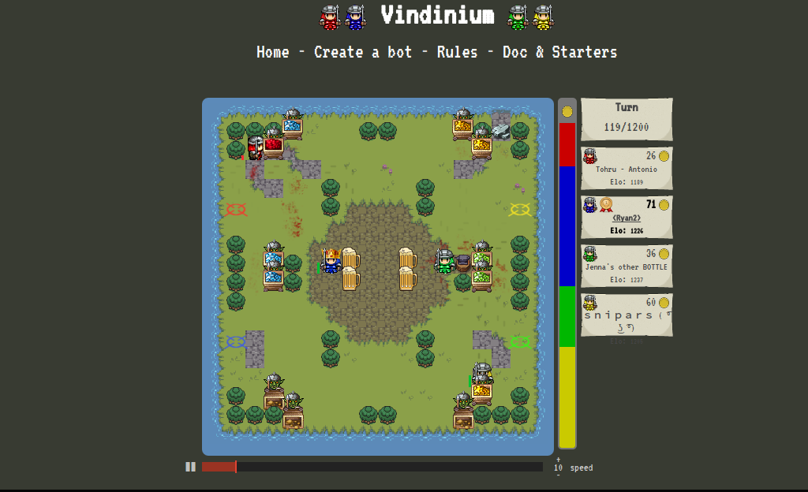
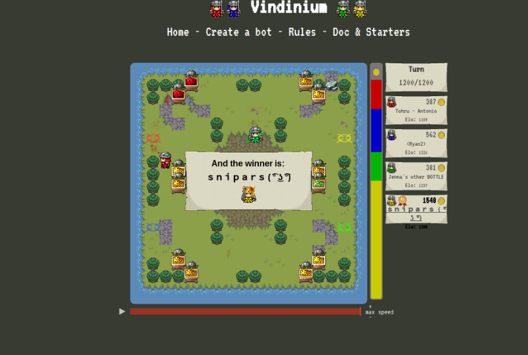

How to Make My Vindinium Bot
What is Vindinium?
 
Vindinium is an online gaming platform where 4 bots made by you and other people battle for the most gold. You get this gold by gaining gold mines throughout the multiple maps but there is a risk to getting this gold. Your bot has 100 health and you lose 20 health when claiming a free or enemy mine. You will gain back 50 health when going to the tavern at the cost of 2 of the gold you obtained. When attacking an enemy bot you deal 20 damage. The game last 1200 turns which may seem like a lot but the game ends really quickly and the bot with the most amount of gold wins.
My Bot
Please read my code because throughout it I left comments explaing what my code is and what it does
var Bot = require('bot');
var PF = require('pathfinding');
/*These 2 lines below are for changing where to play your bot either in the arena against other players or against computer generated bots. */
//var bot = new Bot('p30rg9l0', 'training', 'vindinium.org');
var bot = new Bot('p30rg9l0', 'arena', 'http://52.39.33.197:9000');
var goDir;
var Promise = require('bluebird');
Bot.prototype.botBrain = function() {
return new Promise(function(resolve, reject) {
_this = bot;
//////* Write your bot below Here *//////
//////* Set `myDir` in the direction you want to go and then bot.goDir is set to myDir at the bottom *////////
/* *
* This Code is global data! *
* */
/*This code below tells the bot where to go and where the enemy bots and mines are.*/
var myDir;
var myPos = [bot.yourBot.pos.x, bot.yourBot.pos.y];
var enemyBots = [];
if (bot.yourBot.id != 1) enemyBots.push(bot.bot1);
if (bot.yourBot.id != 2) enemyBots.push(bot.bot2);
if (bot.yourBot.id != 3) enemyBots.push(bot.bot3);
if (bot.yourBot.id != 4) enemyBots.push(bot.bot4);
var enemyMines = [];
if (bot.yourBot.id != 1) enemyMines = enemyMines.concat(bot.bot1mines);
if (bot.yourBot.id != 2) enemyMines = enemyMines.concat(bot.bot2mines);
if (bot.yourBot.id != 3) enemyMines = enemyMines.concat(bot.bot3mines);
if (bot.yourBot.id != 4) enemyMines = enemyMines.concat(bot.bot4mines);
/*The code below finds the closest enemybot by using coordinates*/
var closestBot = enemyBots[0];
for (i = 0; i < enemyBots.length; i++) {
if (bot.findDistance(myPos, [closestBot.pos.x, closestBot.pos.y]) > bot.findDistance(myPos, [enemyBots[i].pos.x, enemyBots[i].pos.y])) {
closestBot = enemyBots[i];
}
}
/* *
* This Code Decides WHAT to do *
* */
/*This code tells my bot when to do the actions such as get health, gold, attack other bots, or attack enemy mines.*/
var task;
if (bot.yourBot.life <= 30) {
task = "taverns";
}
else if (bot.yourBot.life >= 50) {
task = "freemines";
}
else if (bot.yourBot.life >= 70) {
task = "attackMines";
}
else {
task = "attack";
}
/* *
* This Code Determines HOW to do it *
* */
/*This Code find the nearest freemine and sets myDir toward that direction to get the gold from the mines. The meaning for console.log is when you run your code on terminal it will display what you wrote on the console when yuor bot does the action. In this task when your bot claims a freemine the terminal will display 'Claiming a Free Mine!'*/
if (task === "freemines") {
var closestMine = bot.freeMines[0];
for (i = 0; i < bot.freeMines.length; i++) {
if (bot.findDistance(myPos, closestMine) > bot.findDistance(myPos, bot.freeMines[i])) {
closestMine = bot.freeMines[i];
}
}
console.log("Claiming a Free Mine!");
myDir = bot.findPath(myPos, closestMine);
}
/*This code detects and finds the closest enemy bot and attacks that enemy bot*/
if (task === "attack") {
console.log("Attacking nearest bot!");
myDir = bot.findPath(myPos, [closestBot.pos.x, closestBot.pos.y]);
}
/*This code determines where my bot should go to a tavern to regain health*/
if (task === "taverns") {
var closestTavern = bot.taverns[0];
for (i = 0; i < bot.taverns.length; i++) {
if (bot.findDistance(myPos, closestTavern) > bot.findDistance(myPos, bot.taverns[i])) {
closestTavern = bot.taverns[i];
}
}
console.log("taverns");
myDir = bot.findPath(myPos, closestTavern);
}
/*This code tells my bot to attack enemy mines*/
if (task === "attackMines") {
var attackMines = enemyMines[0];
for (i = 0; i < enemyMines.length; i++) {
if (bot.findDistance(myPos, attackMines) > bot.findDistance(myPos, enemyMines[i])) {
enemyMines = attackMines[i];
}
}
console.log("Get Enemy Money");
myDir = bot.findPath(myPos, attackMines);
}
/* *
* This Code Sets your direction based on myDir. If you are trying to go to a place that you can't reach, you move randomly. *
* Otherwise you move in the direction set by your code. Feel free to change this code if you want. */
if (myDir === "none") {
console.log("Going Random!");
var rand = Math.floor(Math.random() * 4);
var dirs = ["north", "south", "east", "west"];
bot.goDir = dirs[rand];
}
else {
bot.goDir = myDir;
}
///////////* DON'T REMOVE ANTYTHING BELOW THIS LINE *//////////////
resolve();
});
};
bot.runGame();
Meaning of my Code
The code above shows the code I ran for my vindinium bot. I made different/situational tasks for my bot such as taverns for going to taverns when my health went below 31, freemines for going to mine that arent taken when my health was above 49, enemymines for going to enemymines when my health was above 69 and attack which is for attack people if none of the rest apply. My made my bot like this because I have a good balance between defence and offence. I will get mines when I my health is between 50-70, I will go to the tavern when my health is below 30 otherwise I will attack other bots no matter how far they are.
What I Learned in this project
I learned a lot about coding in this project it made many things click but it is still very difficult to code without a little help. I was able to get my bot exactly the way I wanted to make it. My bot was very simple but very effective at the same time. It has beaten many other people and is a force to be reckoned with. Before this experience I have taken AI for granted because in todays society they are just there but people don't usually appreciate what work and time it takes to make one. Now I know what challenges we have to overcome to make one and I only made a basic one. I can't imagine what it takes to make AI like Siri or Kortana.